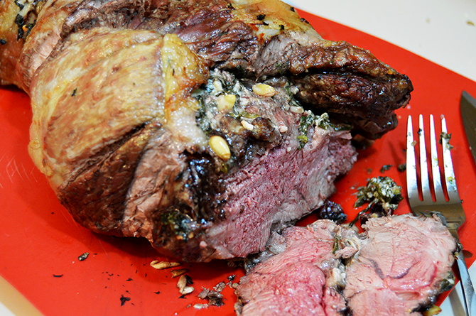
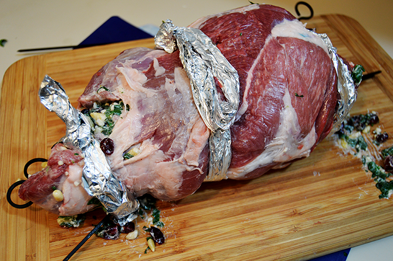

Tyrion's Leg of Lamb

A juicy and cooked lamb leg, inspired by HBO's Game of Thrones
What better way to watch Game of Thrones than by devouring a recipe inspired by everyone's favorite imp. Just be careful not to call him that to his face or he'll set a dragon upon you.
Ingredients
- 5 lb Leg of lamb
- 1/4 cup Basil
- 4 tbsp Garlic
- 1/4 cup Golden raisins
- 16 oz Spinach
- 1 Salt & pepper
- 2 tbsp Olive oil
- 1/4 cup Pine nuts
- 1/3 cup Goat cheese
Steps
- Remove the leg bone from the leg of lamb.
- Chop up your spinach.
- Toss your chopped spinach into a pan heated over medium heat, along with the olive oil.
- Add your minced garlic to the pan and sauté it until it halves in volume, which should take approximately 2 minutes.
- Mix your sautéed spinach and garlic from the pan into a small bowl.
- Add the pine nuts, golden raisins, and goat cheese to the bowl as well.
- Combine the ingredients well.
- Next, take the mixture of sautéed spinach, garlic, pine nuts, golden raisins, and goat cheese, and generously smear it on the inside of the butterflied leg of lamb.
- Roll up some foil and wrap it around your meat, just as you would with cooking twine.

- Place your prepared lamb into a roasting pan and transfer it to the preheated oven set to 350°F.
- Allow the lamb to roast for approximately one to one and a half hours, or until the internal temperature reaches 145°F.
- Once the internal temperature of your lamb’s leg reaches 145°F, it’s time to remove it from the oven. Let the leg rest for a minimum of 10 minutes before proceeding.
- After the rest, it’s time to slice the lamb, revealing its perfectly cooked and succulent interior.
- Serve the slices with pride, savoring the culmination of your culinary endeavors.